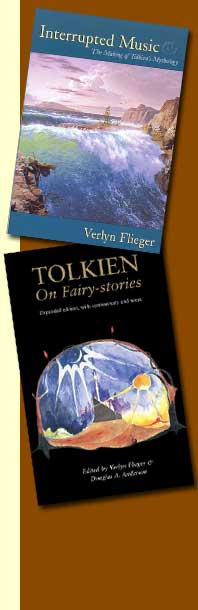

|
© 2021 Festival Art and Books. All rights reserved.
Engaging with other worlds: An interview with Verlyn Flieger “Tolkien is both nostalgically romantic for a lost past and ‘thoroughly modern’ in that he spoke to the world around him, the world he lived in.” Verlyn Flieger is a professor in the Department of English at Maryland University, USA, where she teaches courses in J.R.R. Tolkien, medieval literature and comparative mythology. She has lectured widely on Tolkien and his work, and published three books on J.R.R. Tolkien – Splintered Light, A Question of Time, and Interrupted Music. She is the editor of the critical edition of Tolkien’s Smith of Wootton Major. With Carl Hostetter she is co-editor of the essay collection Tolkien’s Legendarium, and with Douglas A. Anderson she is co-editor of Tolkien on Fairy-stories, the critical edition of J.R.R. Tolkien’s “Fairy-story” essay. She is co-editor of the yearly journal, Tolkien Studies. Colin Duriez interviewed Verlyn Flieger for Festival in the Shire Journal. Verlyn, what is comparative mythology, your own area of specialism? It’s the examination of the world’s great mythologies in the context of their individual cultures and in the context of one another. The purpose is to first identify the universals—those themes, patterns of event, dominant figures, configurations of fears and hopes that occur in all mythologies—and then to explore the ways in which separate cultures have organized these, each in the context of its own geography, language, and society. It’s a fascinating study, revealing what’s common to all humanity and what is local and particular to each community. It tells us who we are, both in general and in particular. What does a study of comparative mythology bring to our understanding of Tolkien’s writings and work? Tolkien was a reader of myth, a teacher of myth, and a writer of myth, and his work fits right into the picture I have described. His stories present those universals against an imaginary cultural background, what he called a “vast backcloth. His essay on “Beowulf: The Monsters and the Critics” not only defends a mythological reading of the human condition—that it is a battle with monsters—it also expresses his regret that we know so little about pre-Christian English mythology. His ambition, stated in the letter to Milton Waldman, to dedicate a mythology to England was intended with some degree of seriousness to remedy that lack. I don’t suppose he really thought his legendarium would be formally taken as England’s mythology, but if we read him as a mythmaker rather than a writer of fantasy, we gain a greater understanding of the real nature of his work. How do you distinguish your approach of comparative mythology from analysis inspired by Carl Jung, centred upon archetypes like light, the quest, and the journey? I notice that themes such as time and light are integral to your analysis, and indeed your exploration of light opened up The Silmarillion for me. I don’t think I would distinguish my approach from Jung’s, because his work is very much a part of my study and understanding of myth. It’s not the whole of it, there are other ways of looking at myth, but Jung’s way is important, and it’s a way I find especially congenial. Jung was a comparativist. His whole notion of the archetypes of the unconscious was developed from his observation that the world’s myths, fairy-stories and dreams address the same issues, have the same themes, patterns, cast of characters. Human beings are hard-wired for myth, and that hard-wiring—the human tendency to configure the world in certain ways—is what Jung called archetypes. You’ve traced the central importance of themes like “light” and “time” in Tolkien. How fortuitous was it that Tolkien was given “time” rather than “space” in the famous literary wager with C.S. Lewis? To what extent did Tolkien succeed in writing on time even though his initial time-travel stories lay unfinished? It was a real piece of luck, if the “wager” (it was actually a coin-toss) was really that simple. Stories like that tend to take on a kind of mythic quality as they get told and retold; they become greater than themselves, being both crystallized and enshrined. A bit like having written, “In a hole in the ground there lived a hobbit” on a blank exam page. However it happened, Tolkien got the right assignment. As, I think, also did Lewis. Space-travel takes its protagonist on an exterior journey, as the expression “outer space” gives evidence. And Lewis had already discovered by way of David Lindsay’s A Voyage to Arcturus the possibilities for science fiction to convey spiritual experience. On the other hand, time-travel (at least in Tolkien’s hands) takes the character on an interior journey into the deep reaches of the mind. Time offered him a way to explore and connect some things that profoundly interested him—the working of the mind in dreams, serial memory, the notion of inherited or “native language”, his feeling that at some level his stories, while not necessarily factual, were nevertheless “true”. Even though the two time-travel stories were unfinished, we have enough information in his notes and outlines from Sheaf to the Ice Age to see what he was getting at, that his imagined mythology was a vehicle for connecting the present with the past. You see myths as “the lens through which [any] culture views and understands its world”. Do you consider myths as positively central to perception and human consciousness? Tolkien believed myths affect perception and can shift our consciousness, didn’t he? That’s a bit tricky, because human perception and human consciousness are themselves very close and interrelated. I think human perception has a tendency to mythologize phenomena. Just look how we’ve made Marilyn Monroe and John Kennedy and King Arthur larger than themselves. So yes, myths are central to both our perception and our consciousness. But myth is not just a lens; it’s part of the process. I think that Tolkien believed that our myths and our perceptions are interdependent and interlocking. You can’t have either without the other. Myths guide our consciousness, and when either one changes, that affects the other. But there’s another component as well—language. Language and perception form each other and both affect consciousness, so language too was central for Tolkien. In the early draft of “Fairy-Stories” he stated flat out that mythology is language and language is mythology. You can’t say it plainer than that. Myths are stories and stories are generated in human perception and expressed in words. The word “myth” comes from Greek mythos from earlier muthos, whose root is mu, “mouth-sound,” utterance. The first spoken word in Tolkien’s Middle-earth is said by the Elves to have been ele, “behold!” when they saw the stars. But the stars were made by Varda to light their awakening, so their first word connects them to their cosmology and story of creation. And it shapes their perception of their world. Why do you see Owen Barfield as such a central figure in the Inklings (perhaps the most important influence on the group), given that he moved to London in 1929 and the group is usually understood as to have existed from the early nineteen-thirties to about the time of Lewis’s decline and death in the early sixties? This intrigues me as Barfield certainly felt part of the group—even the core of the group—and I think considered its origins as actually being the twenties—the period of his “great war” with C.S. Lewis. The answer to “why” I see him as central is “because he was.” But not, I think, central to all the Inklings, chiefly to those who were interested in words for their own sake, and that was mainly Tolkien and Lewis. I don’t see a lot of Barfield in the novels of Charles Williams, or in Warnie Lewis’s work on France in the 17th century, and they were core Inklings. A more important question, however, is not “why” but “how” he was central. Barfield gave C.S. Lewis something to push against, an encounter with a mind as limber and agile as Lewis’s own (and much more rigorous). The “great war”, though I have not read the correspondence (few have) was apparently the kind of contest of equals where two well-matched opponents bash away at one another and wind up with real admiration and respect for their opponents’ skills and bravery. Like Yvain and Gawain in the French romance. Barfield dedicated Poetic Diction to C.S. Lewis with the motto, “Opposition is true friendship”. Barfield’s influence on Tolkien was enormous for the opposite reason, because they seem to have agreed rather than argued. Barfield led Tolkien in the direction he was already going, to the idea that a world and its language reciprocally create and depend on one another. A man who would try to teach himself Finnish so he could read Finish mythology in its own language because he felt the language was part of the mythology is serious about the value of the words. Did Barfield help to inspire your love for myths and their study? Not inspire it, no. I’ve loved myths since I first discovered Padraic Colum’s The Children of Odin in my neighbourhood library when I was about eight years old. But he certainly enhanced it. He showed me why I loved myth, and explained how it spoke to me. What is Barfield’s importance to Tolkien (that is to say, presumably, what is the gist of your ground-breaking study, Splintered Light)? Well, we’ve really been talking about that in your last three questions. It was Barfield who made me look closely at what Tolkien was doing with language, even in the very late versions in the 1977 Silmarillion. Barfield got me interested in the idea that perception becomes more and more narrowly discriminating of phenomena, more precise in describing smaller and smaller fragments of meaning. When this happens, our way of experiencing the world also becomes more precise; but also more fragmented. His example from the Gospel of John is that John’s word pneuma must now be translated variously as “wind” or “breath” or “spirit” depending on the context, where for John they were all parts of an indivisible whole that encompassed all those meanings. That made me see the progressive sundering of the Elves, and the consequent naming of all the splinter groups as Tolkien’s way of making that fragmentation actual, and showing how it worked “on the ground” so to speak. How did you get interested in the writings of Tolkien? I first read The Lord of the Rings in the winter of 1957. I was working in the Acquisitions Office of the Folger Shakespeare Library in Washington,D.C. and one of my co-workers in the Cataloguing Office had just been sent this three-volume novel by her brother in England. She read it and passed it on and pretty soon everybody in Acquisitions and Cataloguing was reading it. And talking about it. We all loved Strider. I had just taken a course in translating Beowulf, so I recognized the culture and language of Rohan straight off. And I also heard clear echoes of Arthur and Sigurd in Sting and The Sword That Was Broken. It was clear that this was no run-of-the-mill fantasy, but a work by a genius story-teller that was deeply informed with scholarship. I’ve been hooked ever since. I started reading it to my three children when my oldest was eight years old and my youngest was two. It became a tradition for me to read it to them every summer. Your studies have had a major influence on Tolkien studies—have you had much resistance to them in the academic literary world, which has often been dismissive of Tolkien’s achievements? Yes. And no. Yes in that I’ve taken a lot of good-natured razzing from colleagues over the years. I’ve been called “The Fantasy Lady”, and advised to move more toward the “mainstream” if I wanted to get tenure. There’s a persistent (though not universal) academic notion that if a course is wildly popular, the teacher must be playing to the gallery. No in that I’ve been allowed to make Tolkien my focus anyway, allowed to teach courses in Tolkien (starting back in about 1972 or so when it was practically unheard of) and I’m teaching them still. And I did get tenure. In writing Tolkien On Fairy-Stories (along with Douglas Anderson) what were the main discoveries that you made? One of the most surprising was that the Epilogue on the Gospels as fairy-story was not in the original lecture. As nearly as we could tell from Manuscript A and the contemporary newspaper reviews, that was added later, most probably at the time of Tolkien’s big revision for Essays Presented to Charles Williams. Another discovery was that of the seriousness with which Tolkien took the question of the supernatural, the possible existence independent of humankind of fairies or inhabiting spirits. His discussion in Manuscript B of the tree-fairy is an example. Why do you think that his essay “On Fairy Stories” is so central to understanding Tolkien? For several reasons. One is simply chronological. The lecture was given in March of 1939, that is, with the success of The Hobbit behind him and the creation of The Lord of the Rings in its very early stages. So the lecture, and the ideas that it both expressed and engendered, act as a kind of hinge between the two works, both connecting them and separating them, articulating and working out the principles that account for the obvious differences in approach between the two books. Some of the things he finds fault with in “On Fairy-stories”: Pigwiggenry, patronizing children—like the Rivendell Elves with their silly nonsense song, or the trolls with their obviously English names (completely out of kilter with the dwarf names from Edda) and speech patterns; or Beorn’s animals walking on their hind legs and setting the table. These are elements in The Hobbit that in principle he came to abjure. They violate the inner consistency of reality that his essay names as an essential for successful sub-creation of a secondary world. You find very little such violation in the world of The Lord of the Rings. The fireworks dragon zooming over the guests at Bilbo’s party is about the only example. Beyond that, and corollary to it, the essay explains the power of language as a creative tool—the adjective as a part of speech in a mythical grammar—and sets out the criteria for successful sub-creation. And then there’s the whole topic of Faërian Drama with its implication that interaction between the human and the Faërie worlds can really happen. We can read Tolkien without the essay and find his work rewarding and enriching. But if you read it in the context of the essay you come to a wider understanding of his critical and imaginative processes. How would you sum up the core of the essay (given the task has frustrated so many)? It is such a rich and complicated argument, I’d hesitate to try, beyond what I’ve already said here and in the Introduction to Tolkien On Fairy-stories. The message is ‘we need fairy-stories’; we need the things they give us, enchantment, escape, recovery, consolation, for our mental and emotional health and well-being. And it’s important to keep in mind that the essay, essential to understanding his thought as it is, was not his last word on the subject. The later, shorter and less discursive essay that he wrote to accompany Smith of Wootton Major takes the argument further. He touches more explicitly in the Smith essay on some things like the actuality of Faërie and the folk of Faërie. the need for human interaction with them, than he does in the earlier, more well-known “On Fairy-stories.” Tolkien of course sees eucatastrophe (the joyful ending) as being fulfilled in actual history – i.e., in creation, the primary world – rather than in the sub-creation of human fairy-stories, even though these in his view anticipate this fulfilment. Here he is aligned with other Christian thinkers like S.T. Coleridge and his close friend C.S. Lewis. Does this limit Tolkien’s insights into fantasy and fairy-story for serious literary study? I don’t see why it should, unless you’re suggesting that he wouldn’t then have enough critical distance from the material. But you can’t engage with literature and stay distant from it. There’s no reason why extrapolating from the Secondary World to the Primary one would limit insight into fantasy for any kind of study, literary or otherwise. Isn’t the reading of literature, whether for pleasure or critical/theoretical assessment, a “literary” occupation? You can study something without cramming for an exam in it. And I wouldn’t quite say that eucatastrophe is fulfilled in history “rather” than in the sub-created world. What Tolkien says in the essay is that it has been “raised to the fulfilment of Creation”, but that’s a difference of degree (or elevation) not of kind. I think he sees eucatastrophe being fulfilled in ways both large (i.e. the Gospels) and small (in fairy-story). You (with co-author Douglas A. Anderson) say that Tolkien’s analysis of fairy-stories “anticipate[s] the modernist and post-modernist thinking of his own time and beyond” (p. 20). What is your claim for Tolkien as a thoroughly modern writer based upon, given he is often taken as a relic of older days? The phrase you quote was used in the context of his discussion of words as agents not just of meaning but of perception of reality, where I think it anticipates deconstruction, reader-response, the interrogation of meaning. To invoke names like Derrida, or Mann, or Lacan, would open a whole new debate. But that’s what was meant. Going beyond that, however, and assuming that you and I both know what “modern” means, that it characterizes a particularly realistic and un-romantic or anti-romantic way of seeing the world and reflecting it in literature, Tolkien is both nostalgically romantic for a lost past and “thoroughly modern” in that he spoke to the world around him, the world he lived in. He wouldn’t have succeeded as an author if he hadn’t. And I think we can agree that he was and is a successful author. There’s a lot of very realistic, very unpleasant stuff in The Lord of the Rings. The fact that he disliked a great deal about modern life, as many did and do now, doesn’t mean that he was stuck in the past, a “relic of older days,” as you put it. The conversations among the orcs, which I find almost refreshing in contrast to some of the more “epic” speeches, are about as realistic as you can get in their reflection of a kind of street-jargon. Tolkien wasn’t the first or the last to see the inherent flaws in “progress” for its own sake, or to dislike some of progress’s grittier products. He didn’t like to drive a car, and he was prescient in foreseeing how machines would come to monopolize and dominate our existence. He fought in the first “mechanized” war. He saw combat in a whole new (and “modern”) way that was different from previous wars, savage and destructive though those might be. He witnessed post-traumatic stress disorder and wrote movingly about it in what happens to Túrin Turambar and Frodo Baggins. Setting aside the archaisms of language, Túrin could fit without much trouble into the world of M*A*S*H* or Catch-22. Frodo’s tragedy is the tragedy of many “modern” heroes. You can’t go home again, said Thomas Wolfe. Frodo found that out, but only because Tolkien and his fellow veterans of WW I had already discovered it the hard way. And through Frodo, the reader finds it out as well. Many readers don’t want to find it out; I’ve had countless students who insisted that The Lord of the Rings has a happy ending. They’re not looking at Frodo. |
 |
|